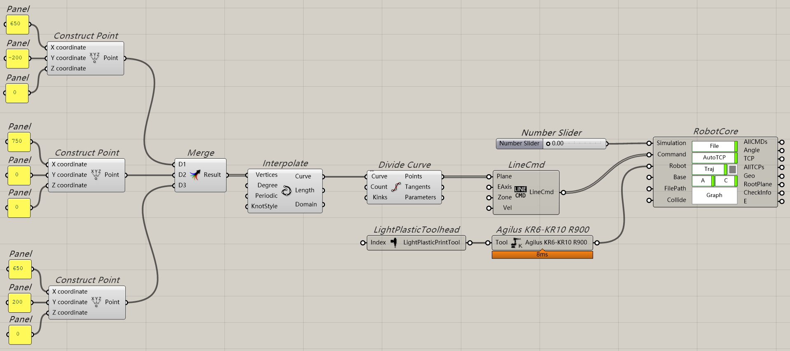
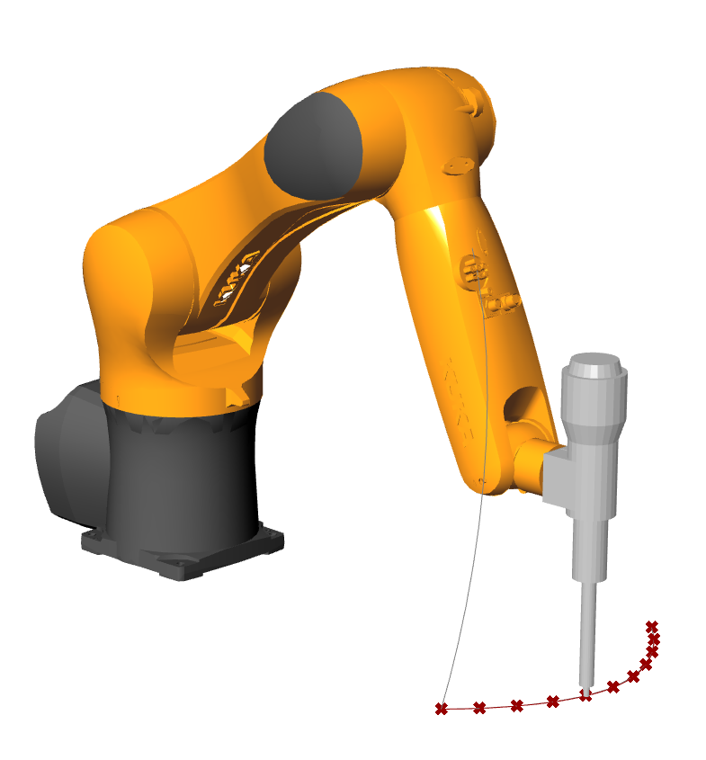

2. Getting started¶
2.1. Create curve¶
In Grasshopper, create three points: drag Construct Point component to the canvas, and use three panels for each Construct Point component to define A,B,C.
A: [650,-200,0]
B: [750, 0, 0]
C: [650,200, 0]
In Grasshopper: drag Merge component and Interpolate component to the canvas, merge the three points that we have created before, and connect the output of Merge component to the input of Interpolate component
The curve is created, now we make robot move along this curve.
2.2. Create component¶
In Grasshopper. Make sure to save the gh file in local file path, name can be any as you like.
Divide the newly created curve by Divide Curve component, keep the parameters as default.
Add LineCmd component (in Command group) to the canvas:
Connect the output of Divide Curve component to the input of LineCmd component, and keep other parameters as default.
Then, add following components to the canvas:
Number slider (make sure domain between 0.00~1.00)
LightPlasticToolhead (in
Tool|ExternalAxis|Othersgroup)Agilus KR6-KR10 R900 (in
Robotgroup)
then connect as figure below:
2.3. Simulate and generate program¶
Check the save path of gh file, you will find a .src file with the same name as gh file. No doubt, this file is offline program of KUKA. You can copy this file to KUKA controller (or by network), then it is necessary to set the same toolhead parameter in KUKA pad, then run the program, now you can see the same movement as simulation in real robot!
